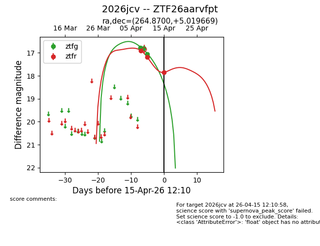
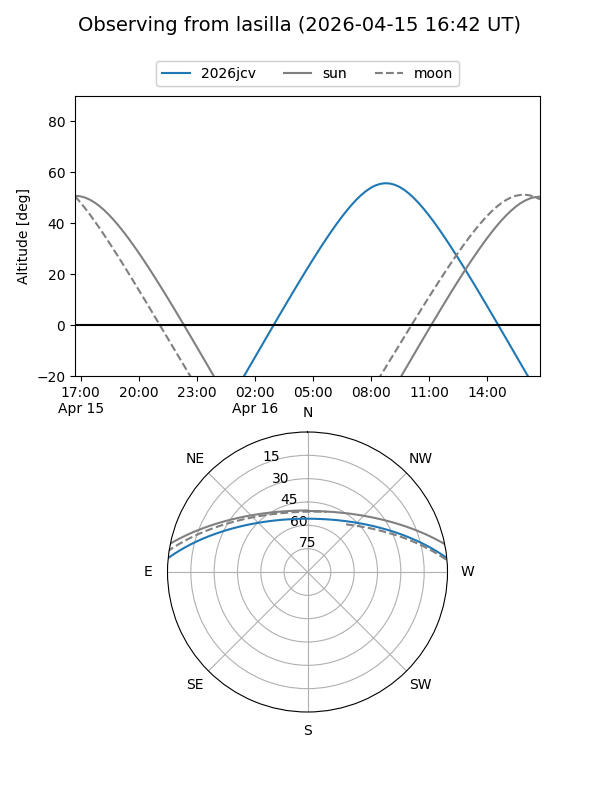
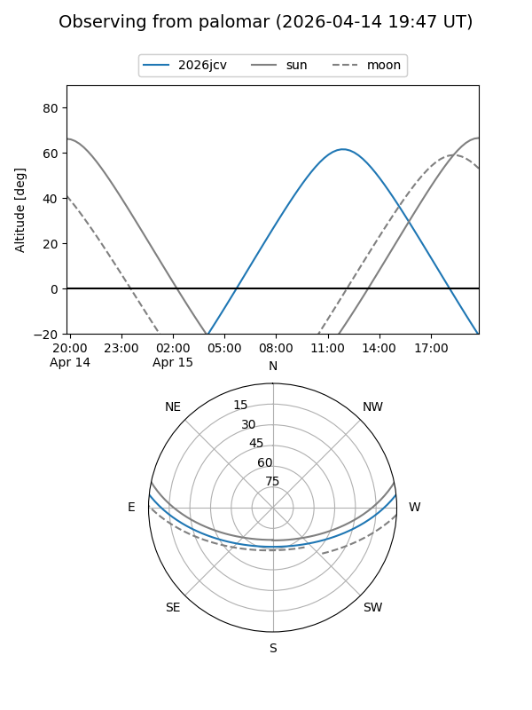
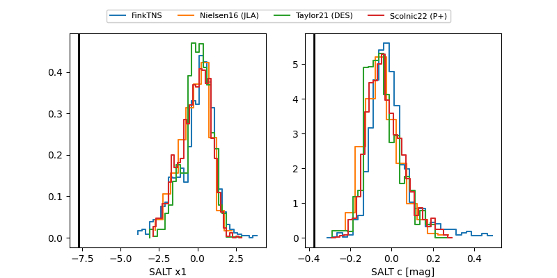

2026jcv
Target 2026jcv at 2026-04-15 12:25
Aliases and brokers:
FINK: link
Lasair: link
ALeRCE: link
TNS: link
YSE: link
alt names
ZTF26aarvfpt (ztf,fink_ztf)
2026jcv (tns,yse)
Coordinates:
equatorial (ra, dec) = 264.8700,+5.01967
equatorial (HMS+DMS) = 17:39:28.79,+05:01:10.81
galactic (l, b) = (29.1629,+18.28295)
Flags:
Photometry:
last ztfg=17.06, ztfr=17.85
3 ztfg, 3 ztfr detections
Lightcurve

Visibility


Additional plots
